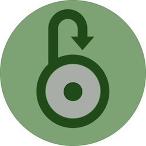

Platforms Dedicated to Improving Your Campus

Affordability
The biggest concern of students in college is paying for college. We must emphasize on affordability as many students struggle with scholarships, paying out of state tuition, and purchasing textbooks year after year. By providing resources to faculty
to reduce the cost of their classes, we'll be able to expect more, for less.

Accessibility
It’s not about creating entirely new resources, but instead putting existing resources back in the hands of students so we are utilizing what is available. Greater access to resources can solve issues with retention and help students know what programs
are offered on campus which are put in place to assist the needs of students free of charge.

Accountability
The voice of students is an integral piece that makes K-State what it is. We count on both ourselves and others to provide the best college experience possible through academics and campus life. Accountability is important as we maintain the priorities
made by student administrations in past years and cater to the changing needs of students today.
Expect More from a Platform Designed to Give You More
Expect More Affordability
Students often have to pay for overpriced, external/third party resources instructors issue in order to bring their class curriculum to an online format. Students are constricted to this format, therefore requiring them to
purchase the third-party source. Students should have the option of checking out the book from the library, borrowing from a friend, or renting at a more affordable price.
Increasing education among professors/deans that online codes (Ex. Mcgraw Hill Connect Codes) are oftentimes more expensive for students and offer less opportunity to find alternative means than buying the code including
renting, sharing, or foregoing the purchase all together.
Encouraging courses using connect codes to utilize canvas and apply for funding through the Open Textbook Initiative to switch to a free textbook completely
Adding a feature within KSIS or the course schedule to notify students when a course will use an online textbook which would hinder grade performance if not purchased
Developing a more affordable program for out of state students who are overpaying for education, essentially increasing the value for students attending so that they do not run out of money and can attend K-State without paying
thousands upon thousands of extra dollars. Working with KBOR and administration to carry this out.
- Opening up opportunities for out of state students by decreasing tuition costs through models structured by the University
- Recognizing programs at K-State with room for growth and incentivizing out of state student attendance with the use of a tuition waiver or scholarship process.
- Adding a feature within KSIS or the course schedule to notify students when a course will use an online textbook which would hinder grade performance if not purchased
Easing the penalties put out to students who do not meet the semester requirements to keep a scholarship granted to them by the University, and providing them resources to mitigate their loss. This keeps high quality students
at K-State and reduces the risk of them dropping out due to an inability to pay for education. Many students endure this problem and want to see a change.
High academically achieving students are able to receive scholarships as freshmen that help with the cost of tuition upon entry to K-State, but after one poor semester students face the challenge of either bringing their cumulative GPA back up, or losing it altogether.
High academically achieving students are able to receive scholarships as freshmen that help with the cost of tuition upon entry to K-State, but after one poor semester students face the challenge of either bringing their cumulative GPA back up, or losing it altogether.
- Standardizing an appeals process for students to go through after losing their scholarship. A formalized appeals process gives equal opportunity to all students facing this challenge to show aspects outside of academic performance, that may have contributed to their loss.. This could include, but is not limited to showing proof of effort, extenuating circumstances, campus involvement and/or other reasoning as to why they did not reach the 3.5 GPA requirement during the semester.
- Re-evaluate the requirements in place for keeping academic scholarships
- Resources following the immediate loss of the scholarship in order to assess why the student lost it: links to counseling, career center, tutoring, powercat financial. Allows further consideration into why the student lost their scholarship and action steps to take in order to regain it.
We know one of the biggest concerns of college students is paying for school. Our campaign is placing a huge emphasis on affordability to ease the struggle with scholarships, paying out of state tuition, and purchasing textbooks year after year.
Expect More Accessibility
K-State offers many resources to help students succeed, from financial help to counseling during tough times- however, many students do not know how to access these resources and some do not even know about them at all. By creating an online program and
portal for students who need it that is readily accessible, it gives them the ability to channel exactly what they need.
- There is currently a page on the K-State website (“One Stop Shop”) that acts as the centralized resource center for students, but many students don’t realize it exists. The current “One Stop Shop” model in place is confusing, and requires extended navigation in order to find resources. Despite the models initial purpose of providing a centralized location for all campus resources, its current structure does not allow for the accessibility it requires from students.
- The new, streamlined, centralized resource portal would be restructured to have more accessible information, with intuitive tiles that assist in helping students find what they need. When visiting the site, the student will be able to immediately find the problems they are facing, and find the resources to fit their needs.
- If you were unsure how you were going to get your next meal there would be a tile on the website that posed the question “Where can I get my next meal?” The student would click that tile and all the resources available that may help with that specific problem would be listed on the next page. Such as, Cat’s Cupboard (the on-campus food pantry), PowerCat Financial, and Office of Financial Aid.
- Every new K-State student is required to go through some orientation session before enrolling in their classes for the semester. This day can look differently for every student depending on their major, traditional or non-traditional, transfer or international students. The one thing they have in common is that the orientation process is supposed to give them all the information they need to be a successful K-State student. Throughout the day students are given information regarding resources on campus, involvement opportunities, how to enroll in classes, meeting with an advisor, etc. Many students walk away forgetting key pieces of information and feeling overwhelmed.
- Working with New Student Services and the Orientation and Enrollment program to develop online orientation modules which will be present on their Canvas page through the duration of the time they are at K-State. The information currently covered on the orientation day would be converted to modules within Canvas. Students would be able to see the information before they arrive on campus and then the orientation day can go a level deeper or reinforce knowledge
- Unlike the ASAP course, students would not be required to go through all the modules. However, students would be incentivized by rewards through the K-State 360 program as badges, which they would receive upon their arrival to K-State.
- Benefits: can better prepare for their advising meeting, walk through a KSIS/Canvas tutorial, stay in the module and refer back to it during their time at K-State. Students that transfer mid-semester would still get the information needed despite not being able to attend an orientation session.
The second pillar of our campaign is putting the vast array of existing resources back into the hands of students. Greater access to resources can solve issues with retention and help students know what programs are offered on campus, programs put in place to address the needs of students, free of charge.
Expect More Accountability
While we can’t commit to being at every student organization every week, we can commit to being present on campus, and willing to listen to the needs of students.
Sent out every two weeks with information from each branch leaders, update from senate committees, sharing of student resources on campus, etc. Utilize the SGA all student listserv in order to create greater transparency with
the student body (This is something that has been started with the current administration that we would like to see continue to grow)
- Making the funding process easier to find for students, including when to apply, where to find the form, and who to contact in the case of questions.
- Offering materials at the beginning of the year to clubs and organizations on how to interact with many programs within SGA; specifically funding processes.
- Develop a way for elected senators to serve their college through interactions with students, meeting with administrators, and a periodical assessment of the needs of their college.
- Institutionalizing Cats for Inclusion: Wildcat Dialogues
- Offering materials at the beginning of the year to clubs and organizations on how to interact with many programs within SGA; specifically funding processes.
- DARS Reports and Flowcharts for academic majors
- Re-evaluation of the K-State 8 courses and requirements
Following through on a vision and plan that includes the needs of all underrepresented groups on campus
Increase transparency between students and the administration as to where we are at in the process of fundraising